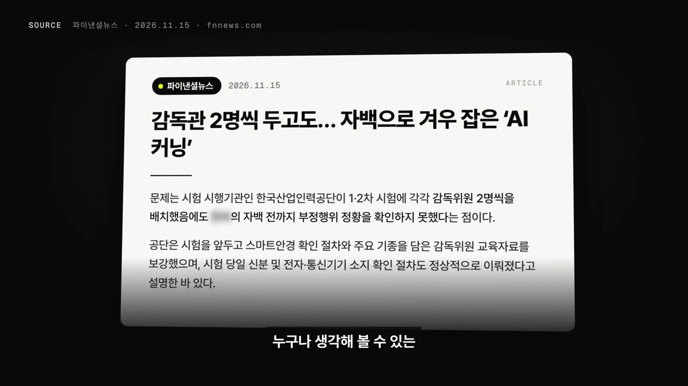
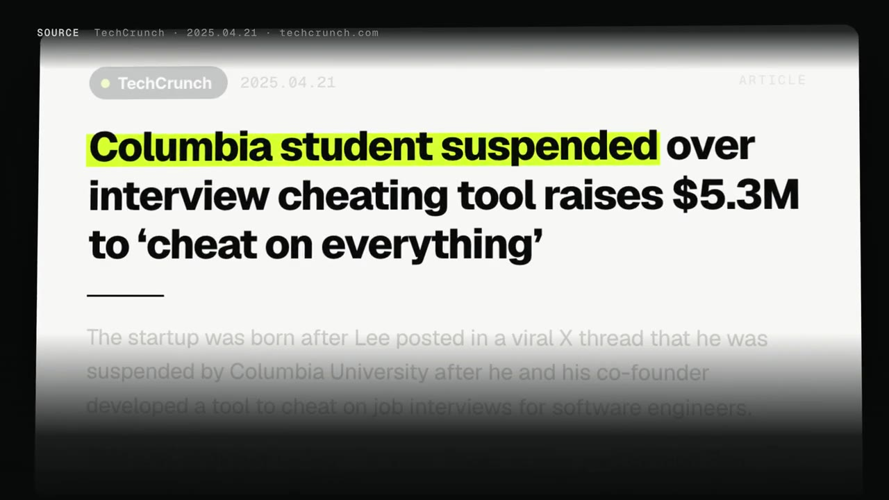
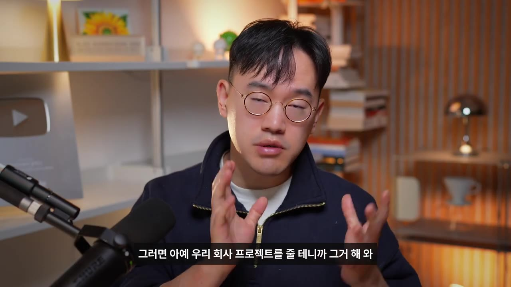
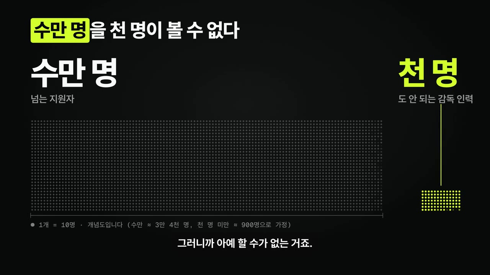
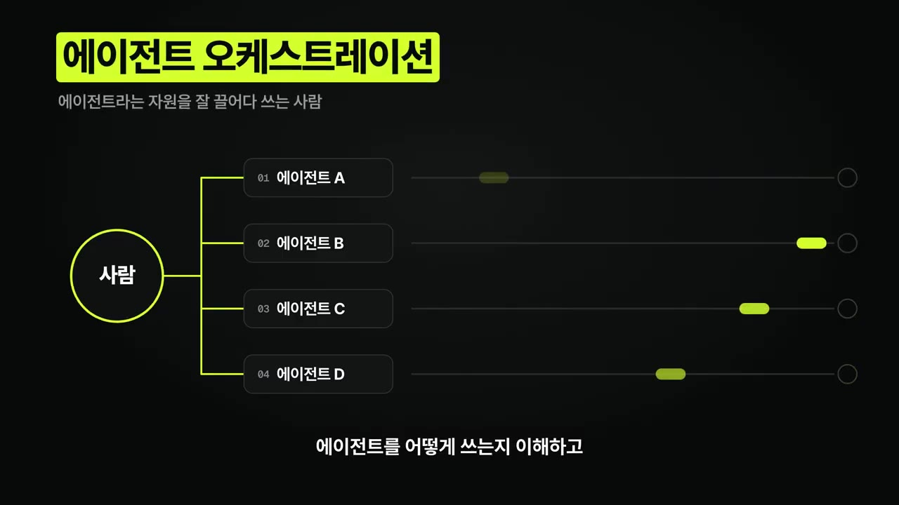
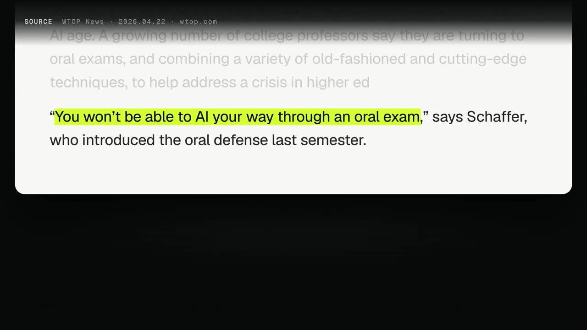

우리가 알던 시험은 모두 사라져야 합니다
▶ 원본 영상 보기한눈에 보기
- 세무사 시험 수석 합격자가 초소형 카메라로 문제를 찍어 생성형 AI에 보내 답을 받아 적었다고 자백했고, 감독 아래서도 걸리지 않았다는 점이 더 큰 문제다.
- 영상 속 주장: 기존 시험·면접 방식을 AI 이전 그대로 유지하는 것은 맞지 않으며, 부정행위를 완전히 막기는 어려워 평가 제도 자체가 바뀔 가능성이 높다.
- 시험이 표준화된 이유는 지원자 대비 감독 자원이 부족하고 평가의 공정성을 지키기 위해서였는데, 이 전제가 AI로 흔들리고 있다.
- 앞으로는 AI를 써서 문제를 해결하는 사람과 AI가 못하는 일(미감, 문제 정의, 예측, 스토리텔링)을 하는 사람이 인재로 여겨질 것이라고 본다.
- 수험생·취준생은 지금 준비를 포기하지 말고, 변화를 먼저 보고 선택과 집중을 하라고 권한다.
이런 분께 도움이 됩니다
- 수능·자격증·취업을 준비하며 AI 시대에 시험과 전문성의 의미가 걱정되는 분.
- 채용·평가 제도가 어떻게 바뀔지, 어떤 역량이 중요해질지 한 사람의 현장 시각(실리콘밸리 기업 재직)으로 들어보고 싶은 분.
핵심 내용
사건과 배경
- 세무사 시험 수석 합격자(400점 만점에 만점에 가까운 점수)가 AI로 치팅했다고 스스로 자백했다. 방법은 초소형 카메라로 문제를 촬영 → 생성형 AI에 전송 → 스마트폰으로 답을 확인해 옮겨 적기였다. (0:00)
- 문제의 핵심은 걸리지 않았다는 것이고, 그동안 알지 못한 부정행위가 더 있었는지, 시험 운영이 제대로 되고 있는지 의심이 커졌다. 수능을 앞둔 시점이라 파장이 컸다.

- 앞선 대표 사례는 Cluely. 미국 컬럼비아대 재학생이 'Interview Coder'라는 도구로 아마존 코딩 인터뷰를 통과한 뒤 이를 제품화해 창업했고, 슬로건이 "cheat on everything"이었다. (1:06)
- 옹호 시각: 도구가 아니라 시스템이 잘못이다. AI가 다 하는 세상에서 사람에게 코딩 문제를 풀게 하는 것 자체가 문제라는 주장.

- 화자(커리어해커 알렉스)는 이 도구를 좋게 보지 않지만, 문제의 심각성에는 동의한다.
💡 AI 이전에 만든 시험·면접 절차를 그대로 유지하는 것이 맞느냐가 화자의 핵심 질문이다.
기존 방어책의 한계
- 코로나 이후 원격 면접(줌 + 코드 입력 화면)이 보편화됐고, 이를 노린 AI 치팅 방지 소프트웨어도 나왔지만 화자는 쉽게 뚫릴 것으로 본다. (2:44)
- 대응 변화: 대면(온사이트) 면접 복귀, 문제 교체, 회사 실제 프로젝트를 과제로 주는 테이크홈 프로젝트.

- 모든 엔지니어가 코딩·디자인·기획서·프로토타입·피치덱까지 AI로 만드는 현실에서, AI를 쓰지 않는다고 전제한 면접 결과가 실제 업무 실력을 얼마나 반영하는지 의문이라고 한다. (3:47)
시험은 왜 생겼나
- 자원 문제: 지원자는 수만 명인데 감독·평가할 사람은 천 명도 안 되어 표준화된 시험이 됐다. (4:22)
- 공정성: 사람이 붙어 평가하면 호불호에 따른 편차가 생길 수 있다.
- 이 두 전제(자원 부족, 객관성)가 AI로 깨지기 시작해 문제가 된다는 설명.

실력 검증은 어떻게 바뀔까
- 현재 실리콘밸리 기업이 보는 역량(화자 경험): 문제 해결, 소통, 책임감, 성실함. 에이전트 활용은 기본이고, 여러 에이전트를 잘 끌어 쓰는 에이전트 오케스트레이션 경험이 빠르고 익숙한 사람을 인재로 본다. (5:24)
- 어려운 점: 같이 일해 보지 않고는 알기 어렵다. AI를 주고 문제 해결 과정을 지켜보는 방식도 모델·프롬프트·결과 편차가 커서 평가가 난감하다. 아직 정답이 없다.

- 해법은 두 가지: ① 부정행위를 철저히 막기 ② 납득 가능한 선에서 평가 제도를 바꾸기. 화자는 ②가 높은 확률로 도입된다고 본다. (7:17)
- 근거: 기술이 발전할수록 막기는 더 어려워진다. 극단적 예로 뇌에 칩을 심는다면 막을 수 없고, 모두에게 엑스레이를 찍을 수도 없다.
- AI가 평가를 맡는 시나리오(화자의 예측): (8:34)
- 답변 패턴으로 본인 생각인지, AI 도움을 받는지 확률적으로 판단
- AI를 걸러내는 '킬러 문항'
- AI 감독관과의 일대일 맞춤형(personalized) 대면 인터뷰. 문제 풀이 점수보다 능력을 더 정확히 평가할 수도 있다고 본다.

💡 자원 부족과 객관성 문제를 풀 수 있는 것은 결국 AI뿐이라는 것이 화자의 논리다.
전문성의 시대와 인재상
- 이현서 님 영상("전문성의 시대는 끝났다")을 언급. 변호사·세무사·변리사 등에서 AI가 더 잘한다면 자격증이 AI보다 낫다는 근거가 되는지 묻는다. (9:49)
- 화자 의견: 경험, 대면에서 얻는 지식 등 AI가 못 배우는 영역이 있어 의사 등은 다르지만, 지식 노동자가 AI를 이기기는 거의 어렵다.
- 그래서 전문 자격시험은 줄고 두 유형의 인재 선발로 바뀔 것이라고 예측한다. (10:06)
| 유형 | 요건 |
|---|---|
| ① AI로 어떤 문제든 푸는 사람 | 욕망(큰 사람이 결과의 질·양·속도 차이가 큼), 성실·책임감, 소통·대화 능력 |
| ② AI가 못하는 걸 잘하는 사람 | 미감, 정의되지 않은 문제 정의, 없는 현상 예측, 철학적 시선, 스토리텔링, 휴먼 터치 |
- 인재는 희소성에서 나오는데, 모두가 AI를 가졌으니 지능은 희소하지 않다. (12:09)
기억할 숫자·인용
- 세무사 시험 400점 만점에 만점에 가까운 점수 (영상 속 언급).
- Cluely 슬로건: "cheat on everything".
- 지원자 수만 명 vs 감독 가능 인원 천 명 미만 (화자의 개략적 표현).
- 참고로 영상 설명란에 Cluely 투자 유치 기사(TechCrunch, a16z, $15M)가 링크돼 있다.
따라 해보기
(방법론 성격이 아니라 절차형 내용은 없고, 화자가 직접 하는 준비 방향만 아래에 정리)
화자가 하는 준비
🔁 화자가 권하는 대응 순서
- 눈앞의 준비 지속
- 선택과 집중
- 변화 먼저 보기
따라 할 수 있는지 점검
- ✅ 바로 따라 할 수 있음: 방향 설정(눈앞의 준비 유지, 선택과 집중)은 이해 가능.
- ⚠️ 2단계 「선택과 집중」: 무엇을 선택하고 어떻게 집중할지 구체적 기준이 영상에 없음 → 영상 12:35 이후 화자의 사례(에이전트 설계, 지식 관리, 에이전트와 사람의 협업 연구)를 참고하되 일반화는 어려움.
- ❓ 입시를 덜 준비해도 된다는 취지의 발언이 있으나 "정말 학벌이 중요하지 않을 수도 있다"는 가정이어서, 수능 등 실제 준비 비중은 개인이 판단해야 함.
생각해볼 점
- 영상 내용은 화자의 예측이며 근거 자료나 통계는 제시되지 않았다. 특히 "AI가 사람을 더 정확히 평가할 것"이라는 주장은 검증되지 않았고, AI 평가의 공정성·편향 문제는 다루지 않는다.
- 화자는 실리콘밸리 소프트웨어 기업 환경에서 말하고 있어, 의료·법률 등 자격 중심 직군이나 한국 입시 제도에 그대로 적용하기는 어렵다.
- 이 영상은 화자의 강의 상품 링크가 설명란에 있으므로, 불안감을 자극하는 메시지의 상업적 맥락도 염두에 둘 만하다. (내 의견)
바로 해볼 일
- 지금 준비 중인 시험·채용에서 AI 사용 규정과 평가 방식(구술·대면 등)이 바뀌었는지 공식 공지로 확인하기
- 내가 AI로 문제를 끝까지 풀어낸 경험(프로젝트·결과물)을 하나 만들어 기록하기
- 내가 가진 'AI가 못하는 강점'(문제 정의, 소통, 스토리텔링 등)이 무엇인지 3줄로 적어 보기